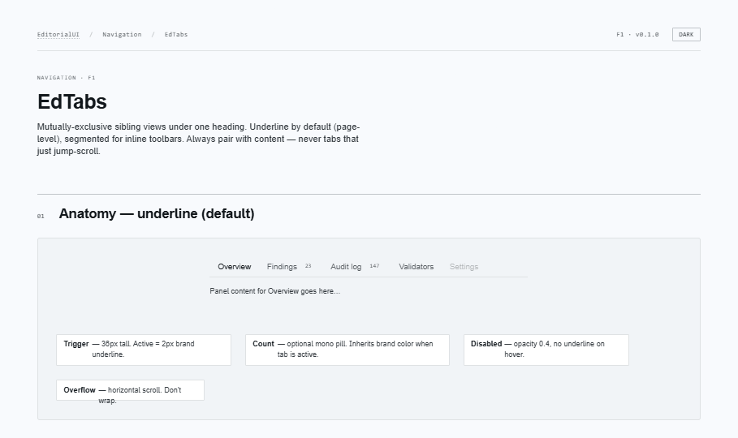
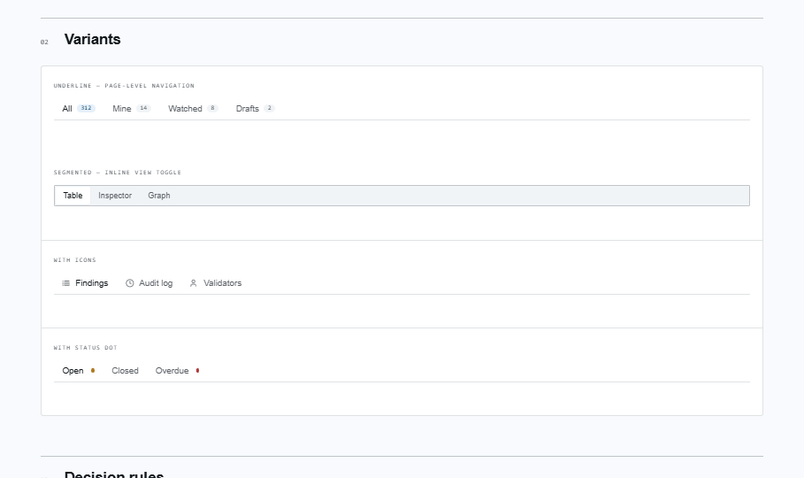
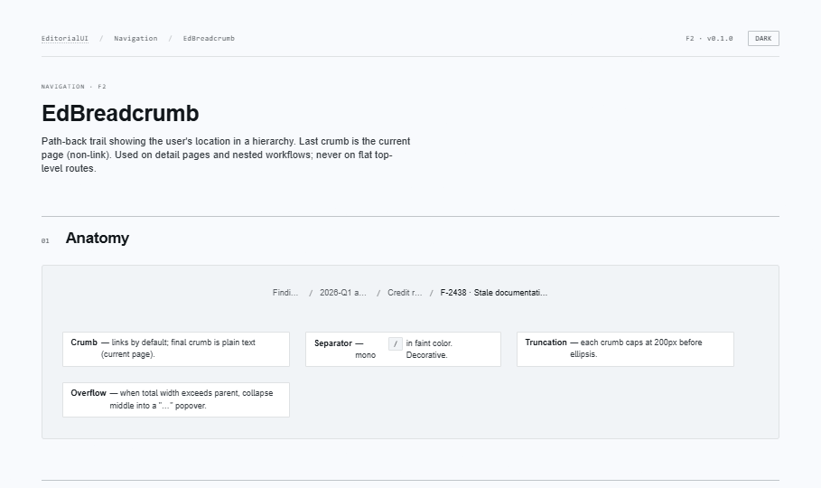
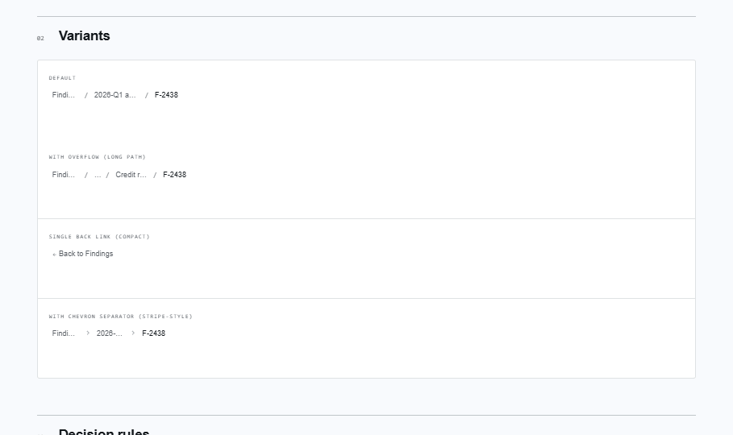
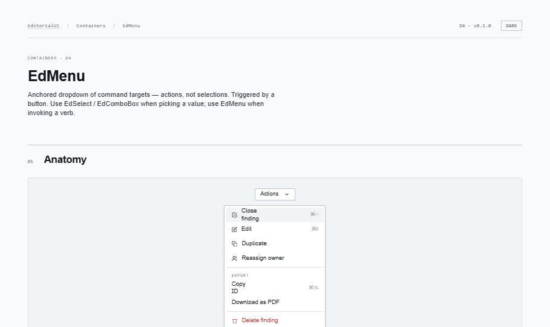
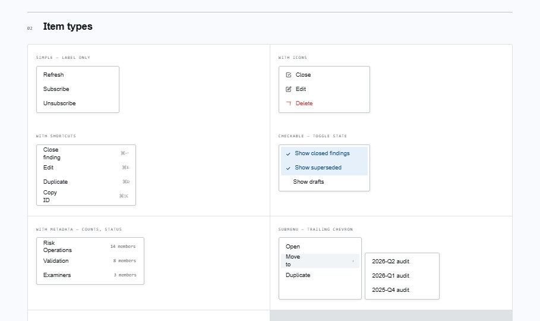
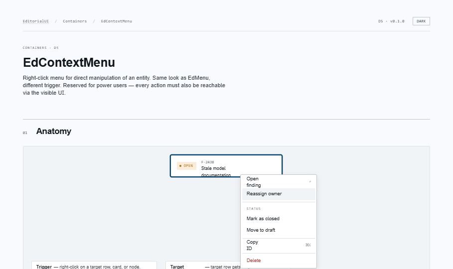
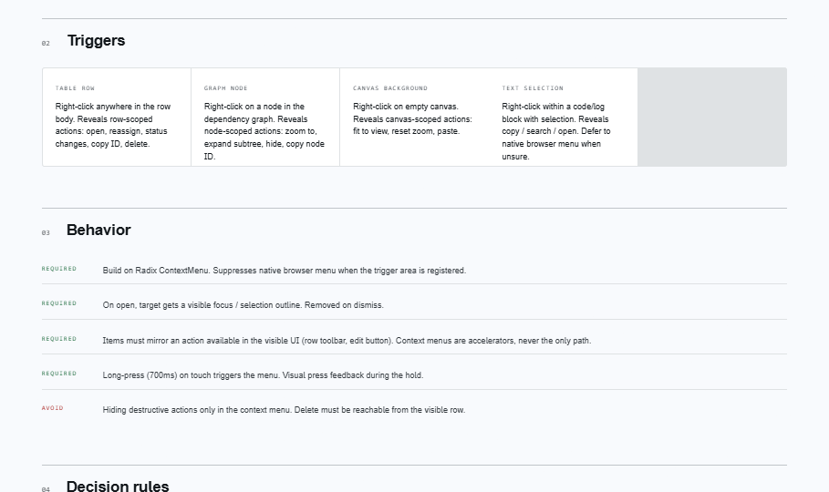

EditorialUI · Implementation
Moving between views and invoking commands: tabs, the breadcrumb trail, and the two menus (button-triggered dropdown + right-click). The two menus share one item model.
apostlerisk. Assumes Bundles 1–6 merged; covers the shared EdMenu item model, the EdContextMenu→EdMenu import order, and the data-array (not children) migration.
open ↗
Shared model: EdMenu and EdContextMenu
use one EdMenuEntry item model and the same stylesheet —
EdContextMenu imports from ../EdMenu. Build the
items array once; drive both a row's overflow button and its
right-click menu from it.
Mutually-exclusive sibling views. Underline (page-level) or segmented (inline toolbar). Count pills fold into the accessible name; optional icons + status dots. Automatic or manual activation (manual for async panels). Encode the active tab in the URL.


Path-back trail. Final crumb is the current page (plain text, aria-current); the rest are links (native or a router adapter via renderLink). Semantic nav + ol. Collapses the middle behind "…" past maxItems. Slash or chevron separators.


Anchored dropdown of command targets (actions, not selections). One EdMenuEntry model covers action items (icon + shortcut + meta), checkbox items, group labels, separators, submenus. Destructive items take danger tone + a required entity-naming ariaLabel.


Right-click menu for direct manipulation. Same item model + visuals as EdMenu (imports its type + stylesheet), different trigger. Keyboard equivalent (Shift+F10 / Menu key) + touch long-press from Radix. Every action must also be in the visible UI — never destructive-only-here.


@radix-ui/react-tabsEdTabs@radix-ui/react-dropdown-menuEdMenu@radix-ui/react-context-menuEdContextMenu
EdBreadcrumb is plain semantic HTML — no dependency.
EdMenuEntry drives both the dropdown and the right-click menu identically.ariaLabel ("Delete finding F-2438") and never live only in a context menu.EdDataTable, EdNativeTable, EdList.
EdContextMenu will wrap table rows; EdMenu powers
the row overflow and column-header menus. The data table is the largest
single component in the system — it ties together selection, status badges,
menus, and empty states from earlier bundles.